Alpha beta
本页面将简要介绍 Minimax 算法和 Alpha–Beta 剪枝．
Minimax 算法
Minimax 算法又叫极小化极大算法，是一种最小化最差（即最大损失）情境下的潜在损失的算法．
过程
在局面确定的双人零和对弈中，常需要进行对抗搜索，构建一棵每个节点都为一个确定状态的搜索树．奇数层为己方先手，偶数层为对方先手．搜索树上每个叶子节点都会被赋予一个估值，估值越大代表我方赢面越大．我方追求更大的赢面，而对方会设法降低我方的赢面；体现在搜索树上就是，奇数层节点（我方节点）总是会选择赢面最大的子节点状态，而偶数层（对方节点）总是会选择（我方）赢面最小的子节点状态．
Minimax 算法中，会从上到下遍历搜索树，回溯时利用子树信息更新答案，最后得到根节点的值——这就是我方在双方都采取最优策略下能获得的最大分数．
示例
来看一个简单的例子．
称我方为 MAX，对方为 MIN，图示如下：
例如，对于如下的局势，假设从左往右搜索，根节点的数值为我方赢面：
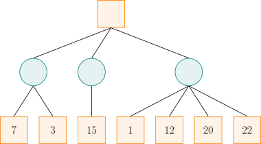
我方应选择中间的路线．因为，如果选择左边的路线，最差的赢面是 $3$；如果选择中间的路线，最差的赢面是 $15$；如果选择右边的路线，最差的赢面是 $1$．虽然选择右边的路线可能有 $22$ 的赢面，但足够理性的对方将会使我方只有 $1$ 的赢面．那么，经过权衡，显然选择中间的路线更优．
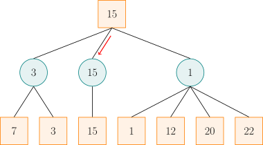
实际上，在看右边的路线时，当发现赢面可能为 $1$ 后就不必再去看赢面为 $12$、$20$、$22$ 的分支了．因为相较于左侧两条路线的赢面，已经可以确定右边的路线不是最好的．
朴素的 Minimax 算法常常需要构建一棵庞大的搜索树，时间和空间复杂度都将不能承受．而 Alpha–Beta 剪枝就是利用搜索树每个节点双方分数的上下界来对 Minimax 进行剪枝优化的一种方法．
需要注意的是，对于不同的问题，搜索树每个节点上的值有着不同的含义，它可以是估值、分数、赢的概率等等．为方便起见，下文统一用分数来称呼．
Alpha–Beta 剪枝
Alpha–Beta 剪枝是针对 Minimax 算法的搜索剪枝．
过程
Minimax 算法中，若已知某节点的所有子节点的分数，则可以算出该节点的分数：对于 MAX 节点，取最大分数；对于 MIN 节点，取最小分数．
在搜索进行到某节点但尚未完成时，虽然不能算出该节点的分数，但是可以算出 目前已经搜索过的节点中，双方分数的取值范围．搜索时，维护两个变量 $\alpha$ 和 $\beta$，分别表示局面进行到该节点时，考虑所有已经搜索过的节点，Alpha 玩家（即寻求最大分数的一方）和 Beta 玩家（即寻求最小分数的一方）能够保证取得的分数的下界和上界．
Alpha–Beta 剪枝的剪枝策略依赖于搜索当前节点时 $\alpha$ 和 $\beta$ 的取值．如果当前节点是 MAX 节点，那么，Alpha 可以继续搜索它的子节点来提高分数下界 $\alpha$．但是，如果某次搜索后已经有 $\alpha\ge\beta$ 了，那么这个节点就不可能出现在一次对弈中：只要到达该节点处，Alpha 玩家就能够保证分数至少是 $\alpha$；可是 Beta 玩家已经知道存在一种（偏离当前路径的）策略，能够保证分数不超过 $\beta\le\alpha$，那么，Beta 玩家自然不会任由局面发展到 当前节点 处．同理，如果当前节点是 MIN 节点，且搜索它的某个子节点后已经发现该节点处有 $\beta\le\alpha$ 成立，那么，同样无需继续搜索其他子节点，因为 Alpha 玩家不会让局面进入 当前节点．总结两种情形可以发现：当 $\alpha \geq \beta$ 时，该节点剩余的分支就不必继续搜索了（也就是可以进行剪枝了）．注意，当 $\alpha = \beta$ 时，也需要剪枝，这是因为不会有更好的结果了，但可能有更差的结果．
搜索过程中，无需维护节点分数，只需要维护 $\alpha$ 和 $\beta$ 即可．初始时，令 $\alpha=-\infty,~\beta=+\infty$．向下搜索时，需要一并下传 $\alpha$ 和 $\beta$ 的信息，以记录两名玩家的备选方案．
搜索完子节点时，需要更新当前节点处的信息．不妨假设当前节点 $X$ 是 MAX 节点，且刚刚搜索完它的子节点 $Y$．那么，节点 $X$ 处的 $\beta$ 值不会改变，只有 $\alpha$ 值需要与子节点 $Y$ 的分数取最大值．如果子节点 $Y$ 是叶子节点，直接用子节点 $Y$ 的分数更新当前节点 $X$ 处的 $\alpha$ 值；否则，只需要用子节点 $Y$ 的 $\beta$ 值更新当前节点 $X$ 的 $\alpha$ 值．此时，有三种可能性：
- 子节点 $Y$ 的 $\beta$ 值严格位于节点 $X$ 的 $\alpha$ 值和 $\beta$ 值之间．因为子节点 $Y$ 继承了节点 $X$ 的 $\alpha$ 值且不会更新它，所以，搜索子节点 $Y$ 完后仍然有 $\beta > \alpha$，就说明搜索子节点 $Y$ 时没有发生剪枝．子节点 $Y$ 最终的 $\beta$ 值，就等于它继承的节点 $X$ 的 $\beta$ 值和它（指子节点 $Y$）的所有子节点的分数中，最小的那个．既然这个最小值严格小于节点 $X$ 的 $\beta$ 值，就说明它一定是子节点 $Y$ 的所有子节点的分数最小值．因此，作为 MIN 节点，子节点 $Y$ 的分数就是这个 $\beta$ 值．用它更新节点 $X$ 的 $\alpha$ 值是合理的．
- 子节点 $Y$ 的 $\beta$ 值就等于节点 $X$ 的 $\beta$ 值．如上文所述，这说明子节点 $Y$ 的所有子节点的分数均不小于节点 $X$ 的 $\beta$ 值．这进一步说明 Beta 玩家不会任由局面进入节点 $X$：因为 Alpha 玩家只要选择了子节点 $Y$，Beta 玩家就不能取得比 $\beta$ 更低的分数．因此，此时使用子节点 $Y$ 的 $\beta$ 值更新节点 $X$ 的 $\alpha$ 值，是为了使得节点 $X$ 处 $\alpha=\beta$，以触发剪枝条件．它的效果与使用 $Y$ 处实际分数——一个大于等于节点 $X$ 处 $\beta$ 值的数字——更新节点 $X$ 的 $\alpha$ 值的效果是一样的．
- 子节点 $Y$ 的 $\beta$ 值小于等于节点 $X$ 的 $\alpha$ 值．此时，子节点 $Y$ 触发了剪枝条件，它的实际分数不会超过子节点 $Y$ 的 $\beta$ 值，更不会超过节点 $X$ 的 $\alpha$ 值．用子节点 $Y$ 的实际分数更新节点 $X$ 的 $\alpha$ 值不会改变 $\alpha$ 值．这与使用子节点 $Y$ 的 $\beta$ 值更新节点 $X$ 的 $\alpha$ 值的效果是一样的．
这一分析说明，当某个子节点搜索完成后，只有它的分数处于第一种情形时，$\alpha$（或 $\beta$）才准确记录了这个子节点作为一个 MAX 节点（或 MIN 节点）的实际分数．对于其他情形，虽然它未必是准确的分数，但是它提供的信息足以保证剪枝的正确进行，从而不影响根节点处的分数记录．
示例
本节通过分析一个例子，来展示如何在搜索过程中更新各个节点处的 $\alpha$ 和 $\beta$ 值．过程中，也一并计算了所涉及的节点处的分数．由此，就可以观察每个节点处的实际分数与所记录的 $\alpha$ 和 $\beta$ 值的关系．但应注意，实现这一算法时，并不会计算这些节点的实际分数．
对于如下的局势，假设从左往右搜索：
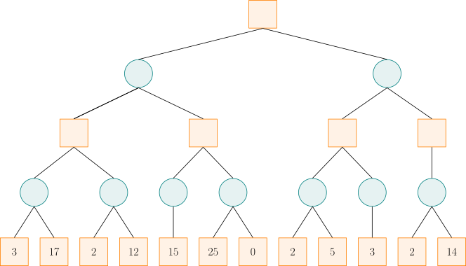
初始化时，令 $\alpha = -\infty,~\beta = +\infty$，并将这一信息沿着搜索路径下传．
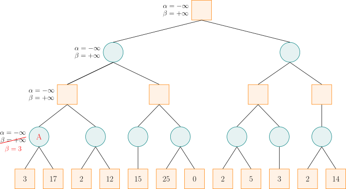
搜索到节点 A 时，由于左子节点的分数为 $3$，而节点 A 是 MIN 节点，试图找分数小的走法，于是将 $\beta$ 值修改为 $3$，这是因为 $3$ 小于当前的 $\beta$ 值（$\beta = +\infty$）．然后节点 A 的右子节点的分数为 $17$，此时不修改节点 A 的 $\beta$ 值，这是因为 $17$ 大于当前的 $\beta$ 值（$\beta = 3$）．此时，节点 A 的所有子节点已搜索完毕，即可计算出节点 A 的分数为 $3$，这与该节点处记录的 $\beta$ 值一致（前文的情形 1）．
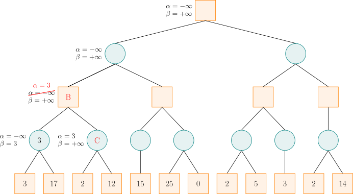
节点 A 是节点 B 的子节点，计算出节点 A 的分数后，可以更新节点 B 的 $\alpha$ 和 $\beta$ 值．由于节点 B 是 MAX 节点，试图找分数大的走法，于是将 $\alpha$ 值修改为 $3$，这是因为子节点 A 处的 $\beta$ 值（$\beta=3$）大于当前的 $\alpha$ 值（$\alpha = -\infty$）．之后，搜索节点 B 的右子节点 C，并将节点 B 的 $\alpha$ 和 $\beta$ 值传递给节点 C．
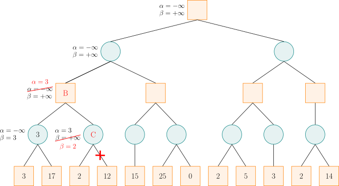
对于节点 C，由于左子节点的分数为 $2$，而节点 C 是 MIN 节点，于是将 $\beta$ 值修改为 $2$．此时 $\alpha \geq \beta$，故节点 C 的剩余子节点就不必搜索了，因为可以确定，Alpha 玩家不会允许局面发展到节点 C．此时，节点 C 是 MIN 节点，它的分数就是 $2$，不超过记录的 $\beta$ 值（前文的情形 3）．由于节点 B 的所有子节点搜索完毕，即可计算出节点 B 的分数为 $3$，与记录的 $\alpha$ 值相同（前文的情形 1）．
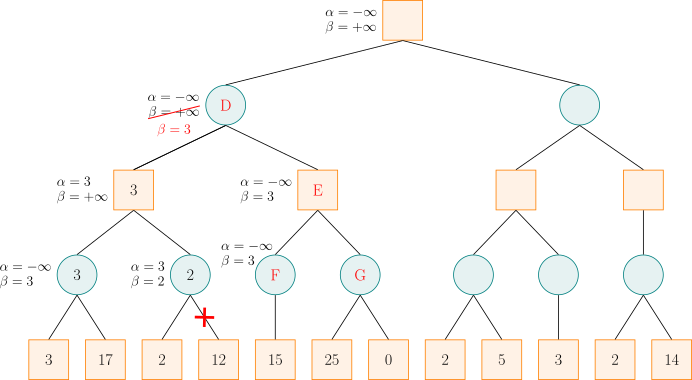
计算出节点 B 的分数后，节点 B 是节点 D 的一个子节点，故可以更新节点 D 的 $\alpha$ 和 $\beta$ 值．由于节点 D 是 MIN 节点，于是将 $\beta$ 值修改为 $3$．然后节点 D 将 $\alpha$ 和 $\beta$ 值传递给节点 E，节点 E 又传递给节点 F．对于节点 F，它只有一个分数为 $15$ 的子节点，由于 $15$ 大于当前的 $\beta$ 值，而节点 F 为 MIN 节点，所以不更新其 $\beta$ 值，然后可以计算出节点 F 的分数为 $15$，大于记录的 $\beta$ 值（前文的情形 2）．
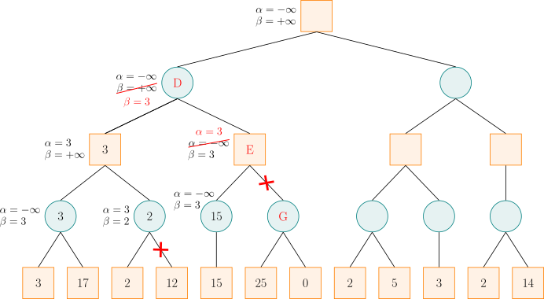
计算出节点 F 的分数后，节点 F 是节点 E 的一个子节点，故可以更新节点 E 的 $\alpha$ 和 $\beta$ 值．节点 E 是 MAX 节点，更新 $\alpha$ 值，此时 $\alpha \geq \beta$，故可以剪去节点 E 的余下分支（即节点 G）．然后，节点 E 是 MAX 节点，将节点 E 的分数设为 $15$，严格大于记录的 $\alpha$ 值（前文的情形 3）．利用节点 E 的 $\alpha$ 值更新节点 D 的 $\beta$ 值，仍然是 $3$．此时，节点 D 的所有子节点搜索完毕，即可计算出节点 D 的分数为 $3$，等于记录的 $\beta$ 值（前文的情形 1）．
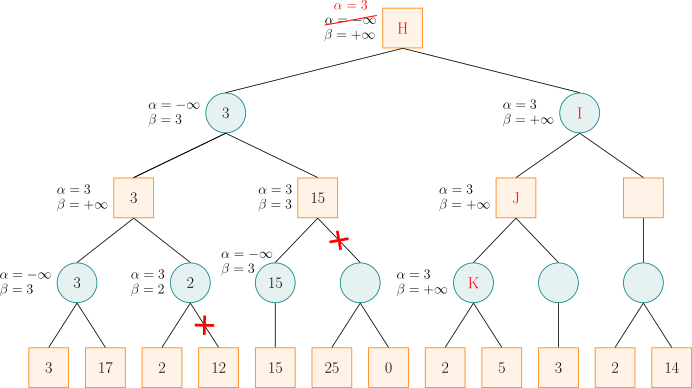
计算出节点 D 的分数后，节点 D 是节点 H 的一个子节点，故可以更新节点 H 的 $\alpha$ 和 $\beta$ 值．节点 H 是 MAX 节点，更新 $\alpha$．然后，按搜索顺序，将节点 H 的 $\alpha$ 和 $\beta$ 值依次传递给节点 I、J、K．对于节点 K，其左子节点的分数为 $2$，而节点 K 是 MIN 节点，更新 $\beta$，此时 $\alpha \geq \beta$，故可以剪去节点 K 的余下分支．然后，将节点 K 的分数设为 $2$，小于等于记录的 $\beta$ 值（前文的情形 3）．
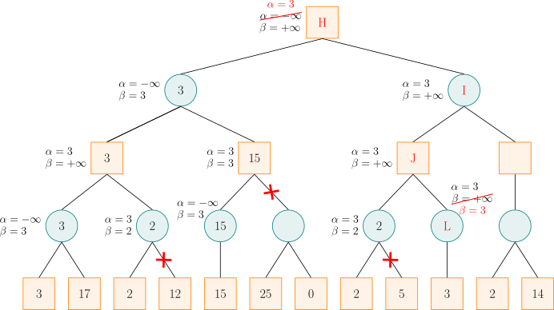
计算出节点 K 的分数后，节点 K 是节点 J 的一个子节点，故可以更新节点 J 的 $\alpha$ 和 $\beta$ 值．节点 J 是 MAX 节点，更新 $\alpha$，但是，由于节点 K 的分数小于 $\alpha$，所以节点 J 的 $\alpha$ 值维持 $3$ 不变．然后，将节点 J 的 $\alpha$ 和 $\beta$ 值传递给节点 L．由于节点 L 是 MIN 节点，更新 $\beta = 3$，此时 $\alpha \geq \beta$，故可以剪去节点 L 的余下分支．由于节点 L 没有余下分支，所以此处并没有实际剪枝．然后，将节点 L 的分数设为 $3$，它小于等于记录的 $\beta$ 值（前文的情形 3）．
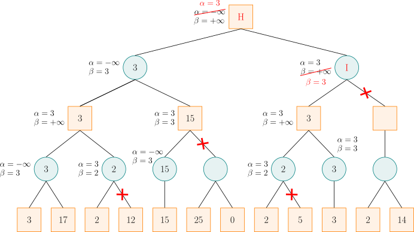
计算出节点 L 的分数后，节点 L 是节点 J 的一个子节点，故可以更新节点 J 的 $\alpha$ 和 $\beta$ 值．节点 J 是 MAX 节点，更新 $\alpha$，但是，由于节点 L 的分数小于等于 $\alpha$，所以节点 J 的 $\alpha$ 值维持 $3$ 不变．此时，节点 J 的所有子节点搜索完毕，即可计算出节点 J 的分数为 $3$，它等于记录的 $\alpha$ 值（前文的情形 2）．
计算出节点 J 的分数后，节点 J 是节点 I 的一个子节点，故可以更新节点 I 的 $\alpha$ 和 $\beta$ 值．节点 I 是 MIN 节点，更新 $\beta$，此时 $\alpha \geq \beta$，故可以剪去节点 I 的余下分支．值得注意的是，由于右子节点的存在，节点 I 的实际分数是 $2$，小于记录的 $\beta$ 值（前文的情形 3）．
计算出节点 I 的分数后，节点 I 是节点 H 的一个子节点，故可以更新节点 H 的 $\alpha$ 和 $\beta$ 值．节点 H 是 MAX 节点，更新 $\alpha$，但是，由于节点 I 的分数小于等于 $\alpha$，所以节点 H 的 $\alpha$ 值维持 $3$ 不变．此时，节点 H 的所有子节点搜索完毕，即可计算出节点 H 的分数为 $3$，它等于记录的 $\alpha$ 值（前文的情形 1）．
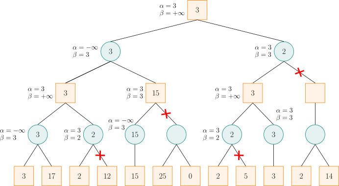
这就是最终结果．
实现
???+ example "参考代码"
cpp
int alpha_beta(int u, int alph, int beta, bool is_max) {
if (!son_num[u]) return val[u];
if (is_max) {
for (int i = 0; i < son_num[u]; ++i) {
int d = son[u][i];
alph = max(alph, alpha_beta(d, alph, beta, !is_max));
if (alph >= beta) break;
}
return alph;
} else {
for (int i = 0; i < son_num[u]; ++i) {
int d = son[u][i];
beta = min(beta, alpha_beta(d, alph, beta, !is_max));
if (alph >= beta) break;
}
return beta;
}
}
参考资料与注释
本文部分引用自博文 详解 Minimax 算法与α-β剪枝_文剑木然，遵循 CC 4.0 BY-SA 版权协议．内容有改动．